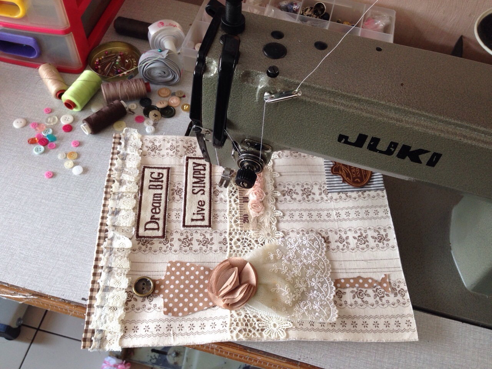
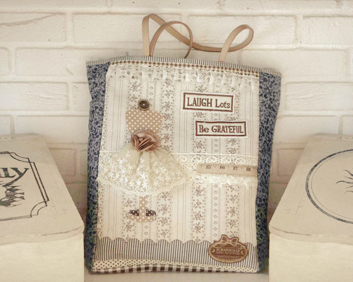
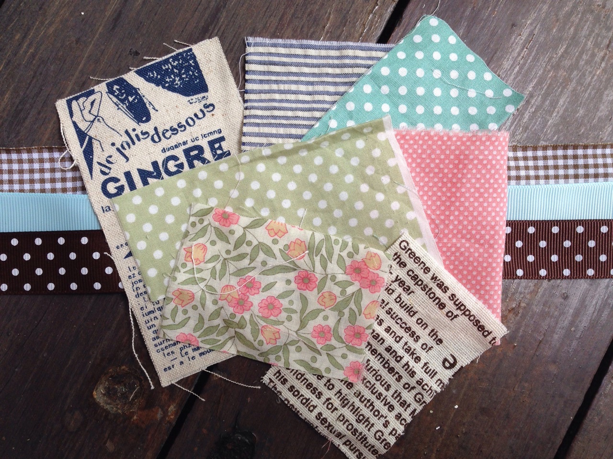
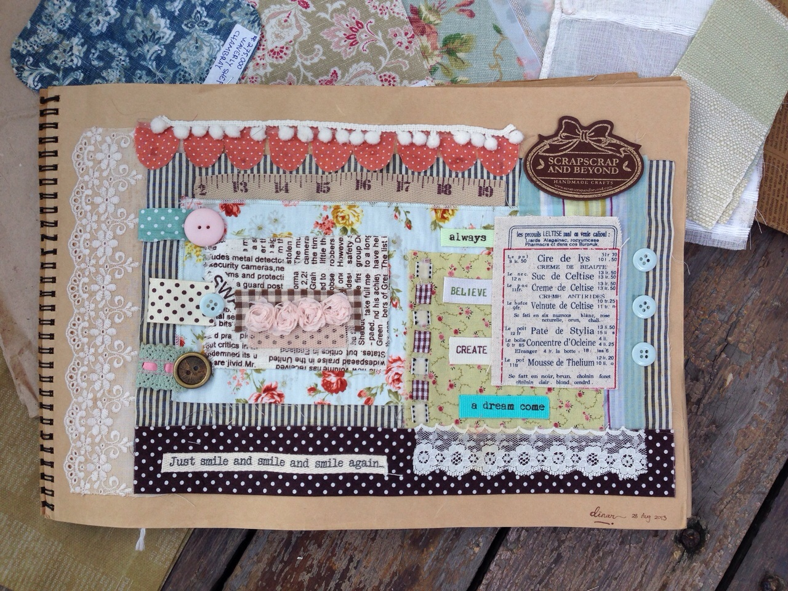
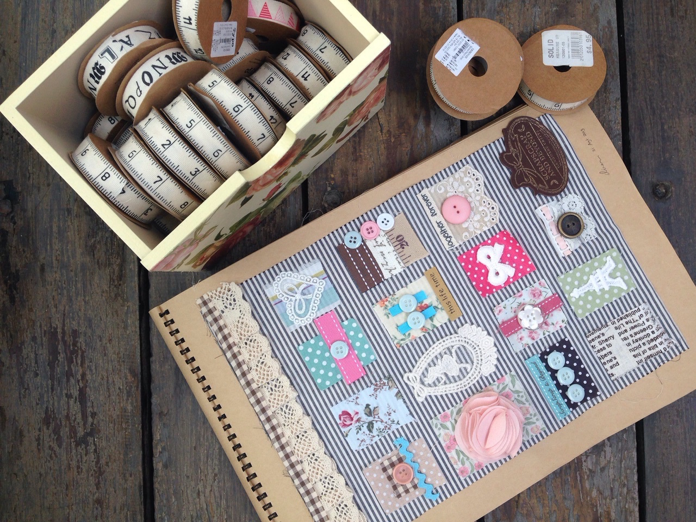

The Making of Moriko
Posted on making | 6 November 2015

ScrapScrap and Beyond is a new interpretation of scraps through wearable arts. It is about exploring the art of scrap making beyond the traditional scrapbooking approach that we have enjoyed doing for years. Our handmade products are a result of finding new ways to collaborate with collages and bringing novelty to the scrap materials.
In scrap making, bits and pieces of materials that are often left aside - if not forgotten at all – become the fundamental components. Scraps provide the singularities that create peculiar characters. They are the silent audiences but rich storytellers. They capture memories while standing aside, but burst with memories when taking the stage.

For those who cherish novelties in repurposed functions and look, ScrapScrap and Beyond compose a new narrative through the art of collaging. Our handmade bags, pouches, and boxes are made limitedly using scrap fabrics, creating a unique look in every piece. We take shabby chic style and bound it with dreamy color palette of white, ivories, and pastels. These elements then converse with words of wisdom you once heard, it feels like looking back through old photographs.
The Start of Things
Posted on making | 22 July 2015

Finally! We are excited that ScrapScrap and Beyond is finally here to meet you. It had been quite a journey to be able to get where we are today with our products. Nonetheless, we know this is only the start of things.
The dreams and vision that we used to secretly held within our minds and started off merely as personal projects are now shaping up to be a product that we can feel proud off. The illustrations we created in our sketchbooks have now found its form through the patterns and colors of our bags and purses collection.

Every design was captured in a workbook that we keep in our small studio. All lines in the collection started as a rough draft here. Jim Brickman or David Foster is played in the background when you enter this room. We adored the imaginative yet realist talk of their lyrics that accompany us, while their seemingly-experimental-but-somehow-feels-complete tunes became our muse.
These sketches depicted the moods, messages, ideas, values, and story that affected us. We then recreate these sketches using the fabrics I had in mind. Putting one pattern on top of another, we structured shapes; deconstruct ideas, and open new doors of conception. We add details that would complete the final product.

This is the time for us to spend just a little bit more time with the materials, and for the materials to encounter each other for the first time. At times it would work exactly as we imagined; other times we struggle, we had to do a number of attempt before we could find the one that get along. At this phase, things complement and revised, while each component contributes a piece of story to the product. As each component unravel them selves, their presence grew more bold and apparent. They gradually create an entity.
We can’t wait to bring more color and patterns to your door. The start of things is pivotal to the start of a journey, but it should not be the only step. You need to have so many steps so can your products create a story, and the story of ScrapScrap and Beyond is still proceeding.